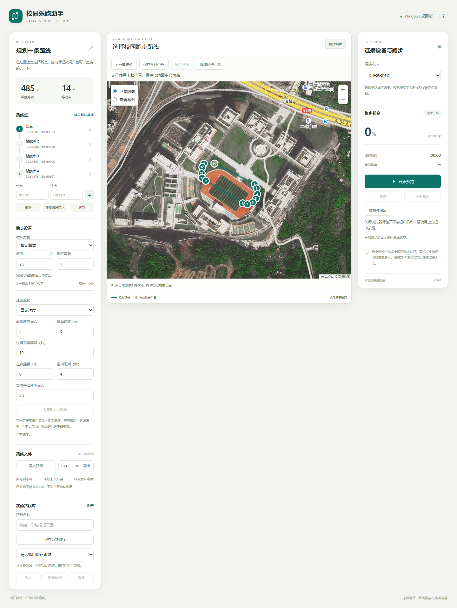
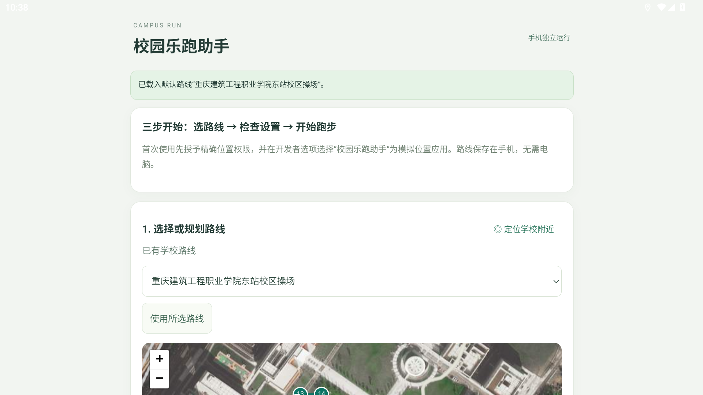

Windows 安装后直接使用，无需 Python、JDK 或 Android SDK。默认高德卫星影像，可切换高德普通地图。

无需 Windows、ADB、MuMu 或电脑配对。手机内保存路线并计算跑步位置；首次使用需授予精确位置权限，打开系统定位，在开发者选项选择本应用为模拟位置应用。
本次补全 GPS 质量元数据，修复只更新初始坐标的问题；后台、暂停、继续和熄屏运行已在 MuMu 上使用手机 APK 自身的定位接口验证。无需 Windows 桥或 Root，真实手机尚未实测。

Windows 安装包内置运行环境，已测试独立启动、控制与升级卸载流程。Android 系统定位与乐跑实际接收分别验证。手机 APK 的标准定位接口已驱动乐跑持续移动；没有使用 MuMu 专用定位接口。真实手机与 iPhone 尚未实测，不能承诺所有机型或所有应用都兼容。
路线采用 WGS84；高德地图采用 GCJ-02。手机定位输出不经过百度坐标。仅 Windows 的 MuMu 管理器输出适配 BD-09；五个测试位置的系统定位最大实测误差约 0.4 米，这个数值不是手机或地图影像精度的证明。
Apple 设备连接仍需系统驱动、信任与开发者设置。学校场地和有效记录要求以学校及乐跑实际规定为准。